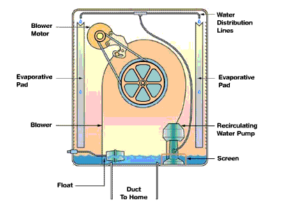

- air -
|  |
(Credit card, check or money order) Call Toll Free 877-626-0877 Kuhle. For orders to be shipped to all other destination worldwide, please E-Mail us and request shipping charges. We usually ship by UPS Ground, but you may select delivery by UPS Air. Please, direct all inquiries regarding your purchase only to Aquamonster Online - Kuhle (DB Management). Call Toll Free 877-626-0877, Fax 561-626-0877 or 561-622-9747, or send E-Mail. |
|
80 Health Benefits With evaporative cooling, a complete air change occurs every one-to-three minutes. . Fresh outside air is filtered through the saturated evaporative media, cooled by evaporation, and circulated by a blower wheel. Cooling Temperatures An evaporative cooler will nearly always deliver air cooler than 80 degrees F. The chart below shows that an evaporative cooler will deliver 78 degree air under a wide variety of typical summertime climatic conditions. |
|
Evaporative Cooling (Residential) The Care and Feeding of a Swamp Cooler by W. " is usually the first question asked by folks who have never been out west, and have never seen an evaporative cooler in operation, as soon as they hear the term mentioned. For a while, I taught air conditioning and refrigeration at Riverside Community College, in Riverside, California. In many western locations, the swamp cooler serves the same purpose in cooling a home as an air conditioner does. Operation and maintenance of the swamp cooler is so simple that it was not even discussed as part of our class. |
|
It conducts unclassified research and is managed by the University of California. . Taha, who is in the Environmental Energy Technologies Division, has been running computer simulations of the air quality in Los Angeles to test the effectiveness of these air pollution reduction strategies. His studies will help the South Coast Air Quality Management District (SCAQMD) decide if it is worth boosting efforts at urban revegetation and re-roofing buildings with materials that efficiently reflect solar radiation. "Past research has demonstrated that increasing urban vegetation and coating roofs with paint or roofing material that is highly reflective to sunlight can reduce the temperature of the urban heat island," says Taha. |
A good air site: http://www.viperlair.com/index.html